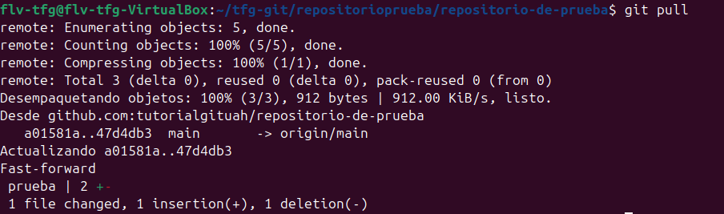
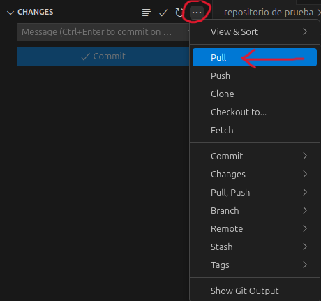

git pullSe utiliza para descargar los cambios del repositorio remoto e integrarlos en tu rama local. Combina dos operaciones: fetch (descargar) y merge (fusionar).

Dentro de la carpeta ejecutamos lo siguiente:
git pull
Esto descargará los cambios del repositorio remoto y los fusionará automáticamente con tu rama local.Para descargar cambios de una rama específica:
git pull origin (nombre de la rama)
Para descargar sin fusionar automáticamente usagit fetch: git fetch
Este comando solo descarga los cambios del repositorio remoto pero no los integra en tu rama local. Es útil cuando quieres revisar qué cambios hay antes de fusionarlos. Después puedes fusionarlos manualmente congit merge (que será explicado en el apartado intermedio).

En la ventana de control de git dentro de vscode, puedes descargar los cambios haciendo click en "Sync Changes" o en el menú extendido (3 puntos horizontales) y seleccionar "Pull". Esto descargará e integrará automáticamente los cambios del repositorio remoto.